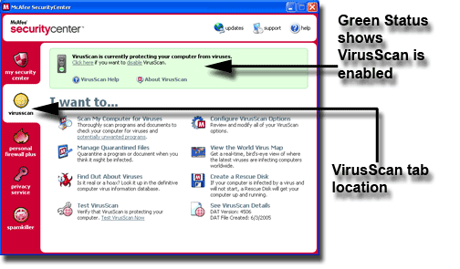
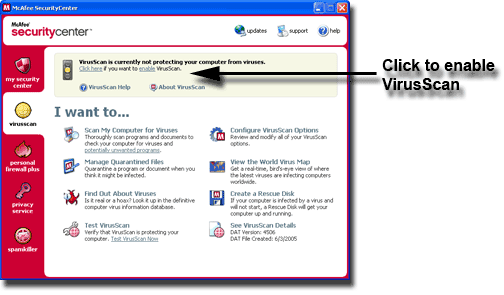
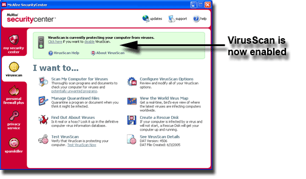

Test VirusScan
The steps below outline a process in which you can download a file called 'EICAR.COM' which SIMULATES the characteristics of a virus. Note: THIS IS NOT A VIRUS, but a test file to ensure your On-Access-Scanner is working properly.
Verify VirusScan's On-Access Scanner is enabled
-
First confirm VirusScan's On-Access Scanner is enabled. One method to achieve this is to double-click on the icon located in your system tray next to your clock. Once SecurityCenter is open, click the VirusScan Tab. If enabled, the status color will be green with the message VirusScan is currently protecting your computer from viruses.
 -
If VirusScan is disabled, the status color will be tan with the message VirusScan is currently not protecting your computer from viruses. To properly test VirusScan you will need to enable VirusScan's On-Access Scanner. To do so, please click to enable.
 -
A message is displayed VirusScan is currently protecting your computer from viruses. This window confirms VirusScan is enabled.

Test VirusScan - Instructions (Windows XP / 2000)
-
Go to http://www.eicar.org/download/eicar.com to download the EICAR.COM test file
-
A McAfee VirusScan alert will display. To finalize, please click 'Delete the infected file'.
-
The 'file download' window may now be closed.